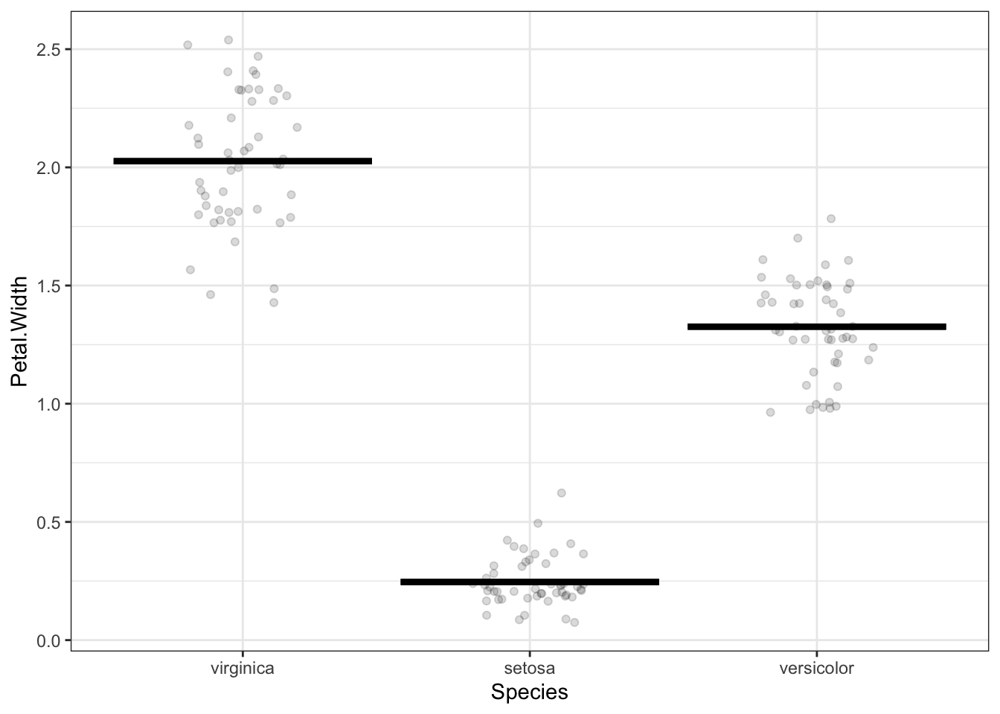

Chapter 6 Multiple explanatory variables

A model of height with two explanatory variables: the mother’s height and the child’s sex. Each explanatory variable added to a model makes it possible for the model more faithfully to reproduce the response variable.
6.1 Covariates
Hooker, Yule data.
6.2 Multi-level categorical explanatory variables

6.3 Too much explanation
Chapter 5 imagined a contest between two students, Linus and Curly, for the best model. Let’s return to that example, but now we’ll construct some models that are more flexible than a straight line.
(ref:several-df-cap) Figure 1: (a) a flat model – zero degrees of flexibility; (b) a straight-line model – one degree of flexibility; (c) a model with one bend – two degrees of flexibility; (d) a model with two bends – three degrees of flexibility."


(ref:several-df-cap)
In the models in Figure 1, the degrees of flexibility indicates the shape of the function. A flat line has no degrees of flexibility. A sloped line has one degree of flexibility. Adding a bend adds another degree of flexibility, so 3 degrees of flexibility corresponds to two bends.
Notice that as the degree of flexibility goes up, the model function gets closer to the data points. Correspondingly, the variance of the model values, \(v_m\), goes up with increasing degrees of flexibility.
The point of counting degrees of flexibility is to be able to adjust \(v_m\) to take into account the intrinsic nature of flexibility to match more closely the response values. For sufficiently high degrees of flexibility, a model will be able almost perfectly to reproduce the response variable, even when there is no relationship between the response and explanatory variables.